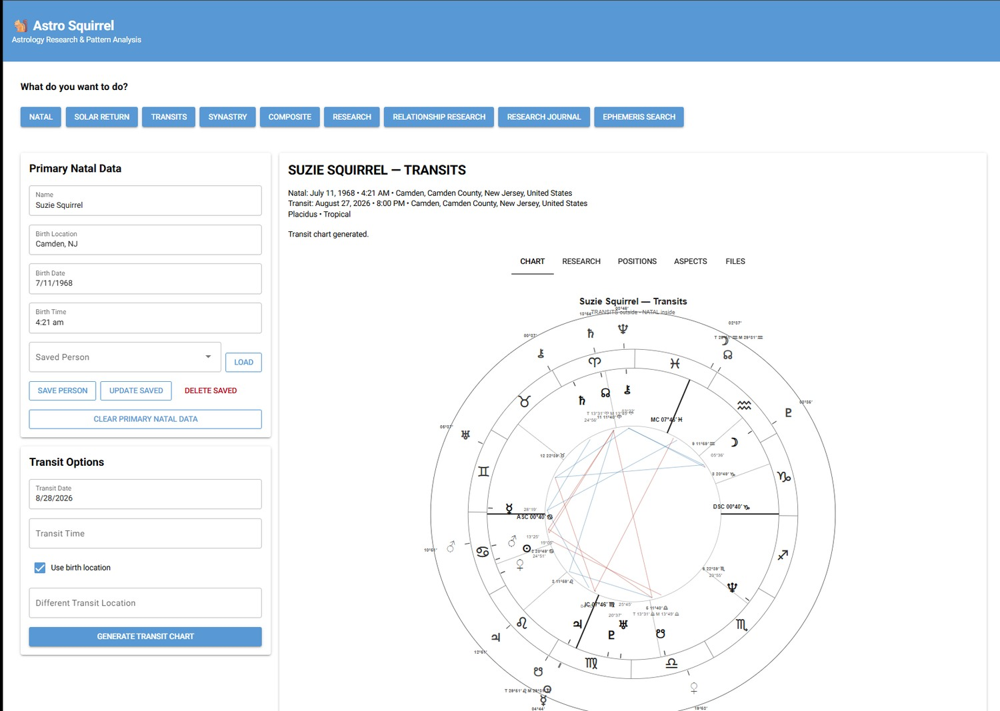
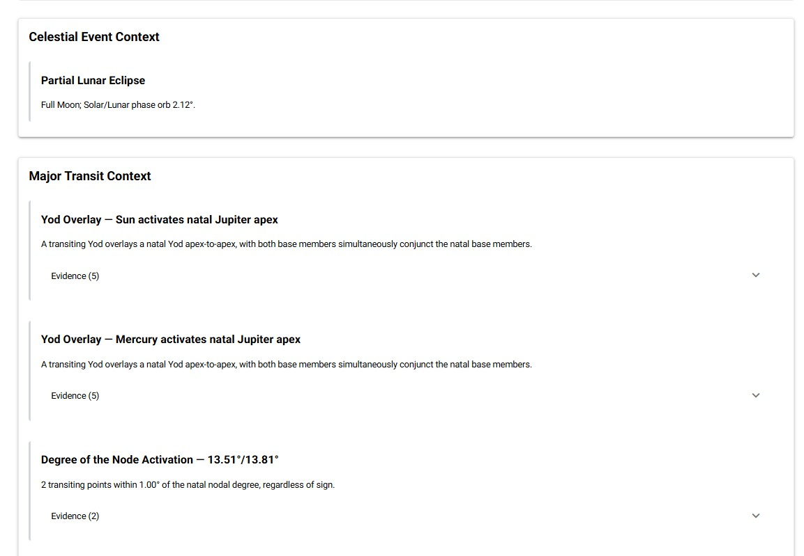
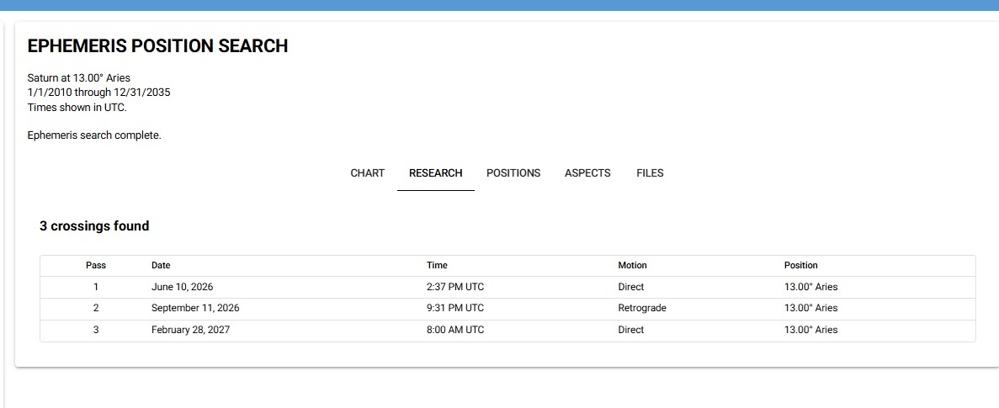
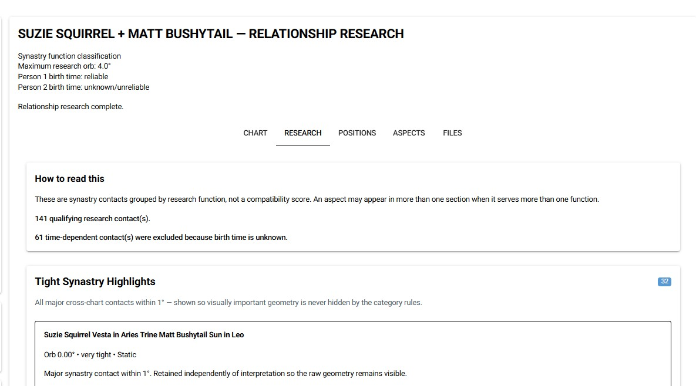
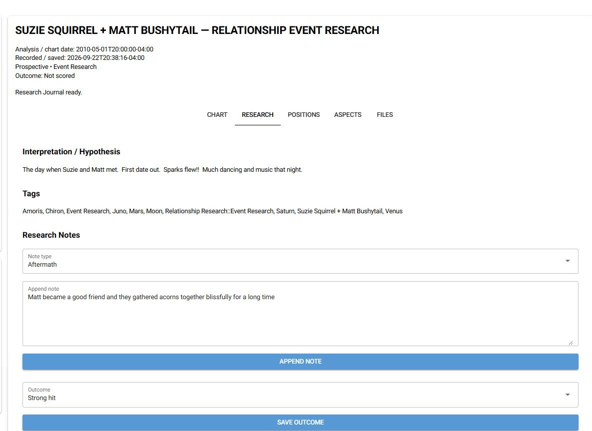

Core Chart Types
Natal, Solar Return, Transit, Synastry, and Composite chart workflows with a custom SVG chart renderer.
Astrology software for people who want to move beyond generating charts and start investigating patterns, transits, relationships, timing, and evidence.

Astro Squirrel combines familiar chart work with tools for testing patterns, comparing charts, and keeping the results organized.
Natal, Solar Return, Transit, Synastry, and Composite chart workflows with a custom SVG chart renderer.
Deterministic detection for Yods, T-Squares, Grand Crosses, Grand Trines, Kites, Mystic Rectangles, and Stelliums.
Mean and True Node display plus research rules such as degree-of-the-node activation scanning.
Synastry, shared transits, composite research, event research, Draconic work, and midpoint analysis.
Search ephemeris positions directly when the research question starts with a degree, body, or date rather than a chart.
Save and reuse birth profiles across research workflows instead of repeatedly entering the same chart data.
Astro Squirrel can flag an unusually interesting configuration without pretending that a pattern proves a specific life outcome.
The Research Journal is designed to preserve what was calculated, what was observed, and what happened later.
A glimpse inside the working application and some of the tools Astro Squirrel brings to chart research.

Surface noteworthy chart structures and cross-chart activations, then inspect the supporting evidence inside the application.

Ask a degree-and-date question directly. Exact crossings can be located across long date ranges, including retrograde passes.

Explore synastry and relationship structures while keeping birth-time reliability and raw geometry visible.

Preserve hypotheses, observations, notes and outcomes so chart research can be revisited instead of disappearing into a one-time reading.
The application is currently a local desktop research tool. Core charting and research features are working, while the custom renderer, composite/transit workflow, exports, and additional quality-control work continue.
If you want to know more about the project, its research tools, or future availability, send a message.